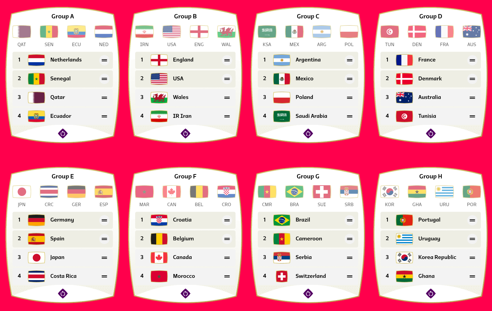
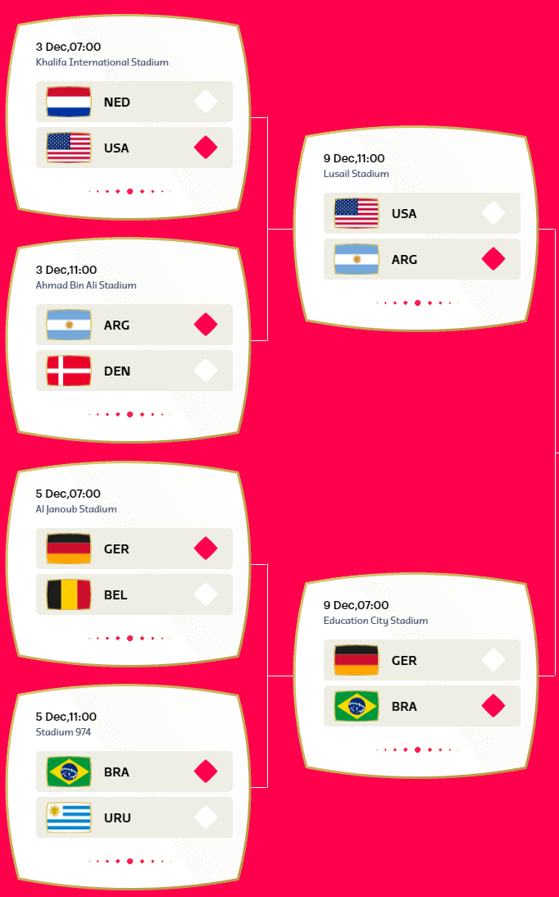
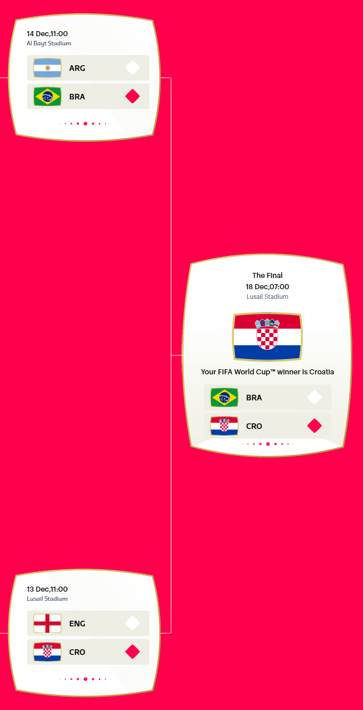

2022 World Cup Picks
Background
First and foremost, I have to make it clear - I know very little of the international soccer scene.
That said, I have constructed a bracket of my 2022 World Cup picks.
Without further ado, here are my picks:
Group Stage

There isn’t much rhyme or reason as to my picks here - they are purely based on which teams sound good. I’ll discuss a few of the picks, but for the most part, just know they are fairly random in nature.
Group A
I like to think tall folks are good at soccer, thus the Netherlands in the 1 slot.
I also gave the benefit of the doubt to the hosts, which is why they are not last in their group.
Group B
IT’S COMING (almost all the way) HOME!
Followed closely by the US because I hear they might be somewhat decent this year - more on that later.
Groups E and G
I like the idea of a Brazil v. Germany rematch in the elimination rounds, so I wanted them both to win out to be on the same side of the bracket.
Elimination Rounds
Top Half of the Bracket

I have heard that the US is looking the best it has ever been in recent years - which I why I have them picked in a gutsy win over the Netherlands.
In the other match, Argentina seems like they are perennially at least in the discussion, so I gave them the nod.
Between the US and Argentina - I unfortunately think the luck will run out for the United States.
In the other two games, as I mentioned before, I would love to see a rematch between Germany and Brazil, so they both make it through to play against one another. In that grudge match - I like Brazil this time.
Bottom Half of the Bracket

In the other side, I still would like England to advance, as well as France. They both are good Euro teams (I think), and ages ago they were rivals (I’m talking like Joan of Arc time).
Croatia I think might be challenged by Spain, but in the end, the Croatians will advance through the round to meet Portugal (who makes it past CMR in their match up).
Croatia ought to carry the win in the next round - at least, I would like to see them do so, for no other reason than they are better in water polo than Spain.
Semis and Finals

In the first semi-final, it’s a match up between two classic teams: Argentina and Brazil. I think that if Brazil makes it to this round through Germany, they will be able to carry the momentum through and take down Argentina.
On the other side - I still have a good feeling about Croatia. As much as I would like to see England take it all the way, I think that they won’t be able to stop the Croatian onslaught.
And finally… in the finals…
Croatia! I mean what is not to like?! Their fans even wear water polo caps at their matches!
There you have it! My picks for the 2022 World Cup. We’ll have to wait and see how things land.
-CH